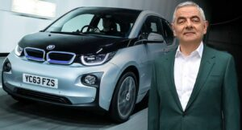
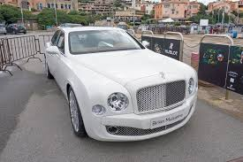
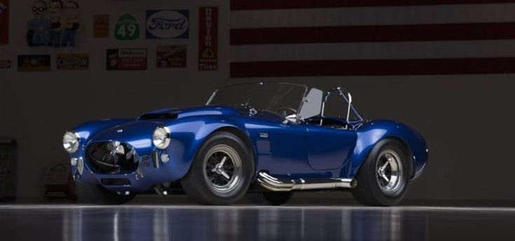
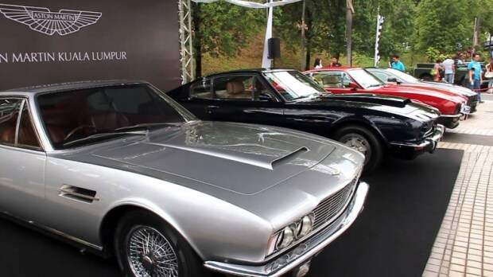
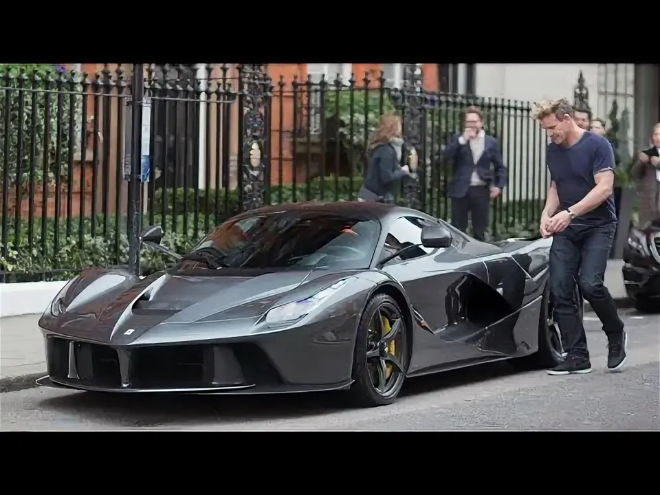
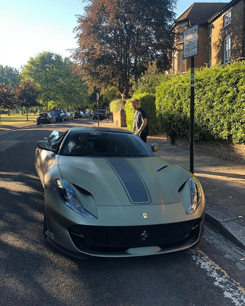
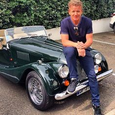

Для большинства автолюбителей реальная коллекция ограничивается парой‑тройкой машин: повседневный автомобиль, внедорожник и, в лучшем случае, «игрушка» на выходные. Люди чуть богаче добавляют к этому еще одну повседневную машину и что‑нибудь гоночное, но всё, что выходит за рамки нескольких автомобилей, для большинства остается мечтой. Настоящие же коллекции из десятков и сотен машин чаще всего можно увидеть только за музейными ограждениями. Частные гаражи с персоналом, системами подзарядки, стенами, увешанными ключами, и гиперкарами, стоящими плотнее консервированных сардин, — обычная реальность избранных коллекционеров. Среди них шеф‑повара, топ‑менеджеры, финансисты, боксеры и комики, но всех объединяет одна страсть — любовь к автомобилям. Ниже — 3 из крупнейших частных коллекций автомобилей в мире.

.webp)

Собрать столь внушительный автопарк — задача, доступная немногим, и чаще всего за этим стоят сложные сделки. В случае Жерара Лопеса ключевыми экспонатами стали Renault и Формула‑1. Соучредитель инвестиционной компании Genii Capital в 2009 году приобрел гоночную команду Renault F1, а вместе с ней закрепил и собственный статус крупного коллекционера.Уже в 2012 году в его собрании насчитывалось около 85 автомобилей, и с тех пор этот список наверняка вырос. В коллекции представлены Lancia, BMW, Ferrari, Lamborghini (включая внедорожник LM002) и множество других марок. При этом Лопес принципиально не превращает машины в музейные экспонаты: в интервью Top Gear он подчеркивал, что получает настоящее удовольствие от вождения и не рассматривает автомобили только как инвестиции. Его «святым Граалем» долгое время был совсем не суперкар, а скромный Golf GTI 1983 года.


Когда речь заходит о владельцах многомиллионных автомобильных коллекций, на ум обычно приходят финансисты, владельцы команд или поп‑звезды, но не шеф‑повара. Тем не менее именно кулинарная карьера и телевизионный успех позволили Гордону Рамзи собрать впечатляющий автопарк. Начав как шеф, затем ресторатор и медиаперсона, он постепенно выстроил бизнес‑империю и накопил средства на коллекцию мечты.егодня в распоряжении Рамзи около 94 автомобилей общей стоимостью порядка 16 миллионов долларов. Основной акцент сделан на супер‑ и гиперкары: от «входного» Aston Martin DB7 2001 года до ультраредкой Ferrari Monza SP2. Иногда Рамзи соединяет свои две страсти — автомобили и еду: например, демонстрировал, как готовить сэндвич с сыром на раскаленном V12 гиперкара Aston Martin Valkyrie.



auto.mail.ru